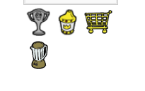
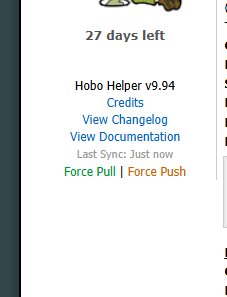

What does it do?
The Living Area Helper injects highly convenient quality-of-life shortcuts directly into your Living Area dashboard, such as an immediate link to the Mixer, quick documentation access, and a smart filter for your recent news.
Note: The Helper also actively scans your "Alive" time to intelligently synchronize your healing timers in the background!
Mixer Shortcut & Guides Link
Instead of digging through the City menus to reach the Mixer, the script adds a convenient direct link (the blue blender icon) right next to your Hobo Grail and Golden Trolley icons.
Directly beneath your player profile information, you will also find the link to the How-To Guides (which you used to find this page!).
Visual Examples
Mixer Icon:

How-To Guides Link:

News Filter
At the bottom of your Living Area where your recent news events are displayed, you will now see a search box labeled Filter News.
- Type any keyword into the search box (e.g. "attacked", "donated", or a specific player's name).
- The list will instantly hide any news item that does not match your text.
- Click the Clear button to bring all news items back into view.
How to disable features
If you don't want the Mixer shortcut or other specific modifications:
- Go to the Preferences page in-game.
- Scroll down to the Hobo Helper Settings section.
- Uncheck the box next to Mixer Link (or whichever feature you want off) and hit Save.